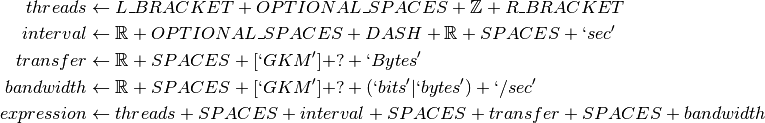

The Iperf Expressions¶
This module holds a set of regular expressions to help with lexing the iperf input.
The ExpressionBase¶
The ExpressionBase is an Abstract Base Class that provides a logger for children and requires that they implement an expression property.
ExpressionBase |
The HumanExpression¶
This is a concrete implementation of the ExpressionBase.
HumanExpression |
The expression is composed of parts from Oatbran so I will not re-define the base components. The following is an approximation of the expression (all the parts that are in all-capital letters are from oatbran, as are the number classes which are used because the latex output is not that easy to read in sphinx):

The CSV Expression¶
The CSVExpression matches csv-output format (-y c).
CsvExpression |
As with the above, the main regular expressions are defined in the oatbran module and the following is just a rough approximation of the regular expression used:
![thread &\gets \mathbb{N}\\
timestamp &\gets \mathbb{Z}\\
sender\_ip &\gets IP\_ADDRESS\\
sender\_port &\gets \mathbb{Z}\\
receiver\_ip &\gets IP\_ADDRESS\\
receiver\_port &\gets \mathbb{Z}\\
start &\gets \mathbb{R}\\
end &\gets \mathbb{R}\\
interval &\gets start + DASH + end\\
transfer &\gets \mathbb{Z}\\
bandwidth &\gets \mathbb{Z}\\
nodes &\gets sender\_ip + COMMA + sender\_port + COMMA + receiver\_ip + COMMA + receiver\_port\\
data &\gets interval + COMMA + transfer + bandwidth\\
expression &\gets timestamp + COMMA + node + COMMA + thread + COMMA + data](../../_images/math/b91d2aa1191c6ff81326b9a14c0d366125084e85.png)
CombinedExpression¶
This does not look like it was actually implemented. I think it was a stillborn idea.
Parser Keys¶
The ParserKeys holds the keys for the re.match group dictionaries.